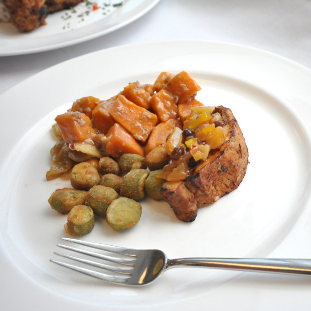

Stove-Top Smoked and Roasted Pork Loin
Ingredients
Main Dish
- 4 to 5 pounds Pork loin, boneless
- 1 cup Wood chips
Seasoning Rub
- 4 each Garlic cloves, peeled, mashed to a paste
- 3 tablespoons Olive oil
- 1 teaspoon Thyme, dried
- 1 teaspoon Basil, dried
- Salt, To taste
- Pepper, To taste
Preparation
- Gather all the ingredients and equipment.
- Trim the pork loin, tie with butcher’s
- Combine all ingredients for the seasoning rub (be sure to mash garlic to a smooth paste before combining with the rest of the ingredients). Rub this mixture into the pork loin.
- Place the wood chips in a half, 4-inch (10-centimeter) hotel pan. Place pork loin in a half, 2-inch (5-centimeter) perforated hotel pan and place over the wood chips. Cover the pans tightly with aluminum foil.
- Place pan over high heat until chips begin to smoke (about 4 to 5 minutes). Immediately remove pan from heat and set aside, under the hood system, for 45 minutes; do not remove foil (and therefore allow smoke to escape) until after the 45 minutes.
- Meanwhile, preheat oven to 375°F (190°C).
- Place cold-smoked pork loin on a roasting rack in a roasting pan.
- Roast the pork to an internal temperature of 135°F (57°C).
- Remove from the oven and allow to rest and carry over in a warm place; temperature should reach 145°F (63°C) before serving.
- The roasting pan may be deglazed to prepare a pan gravy or jus for service.
- At service, slice the roast and plate, as demonstrated.
Temperature
Minimum internal temperature 145°F
Serving Size
4 ounces (115 grams)
Yield
10 servings
Chef's Note
Place foil on bottom of the pan before smoking
Techniques
Roasting
Geographic Region
United States